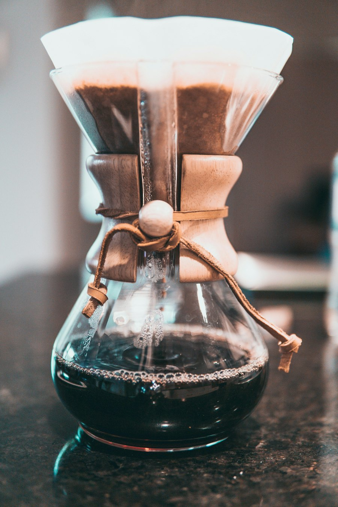
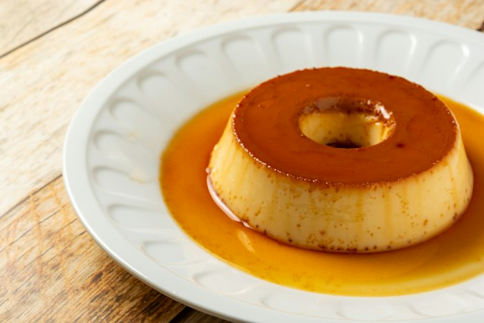
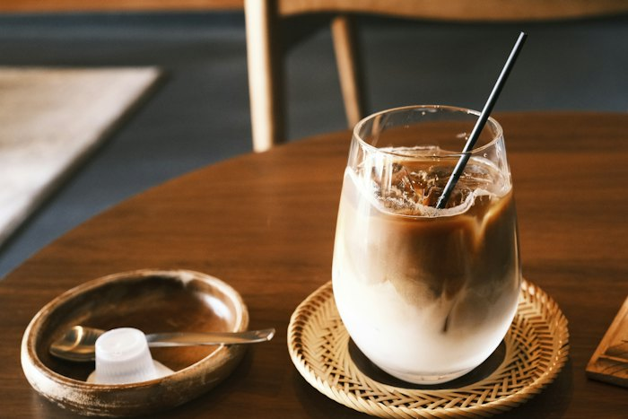
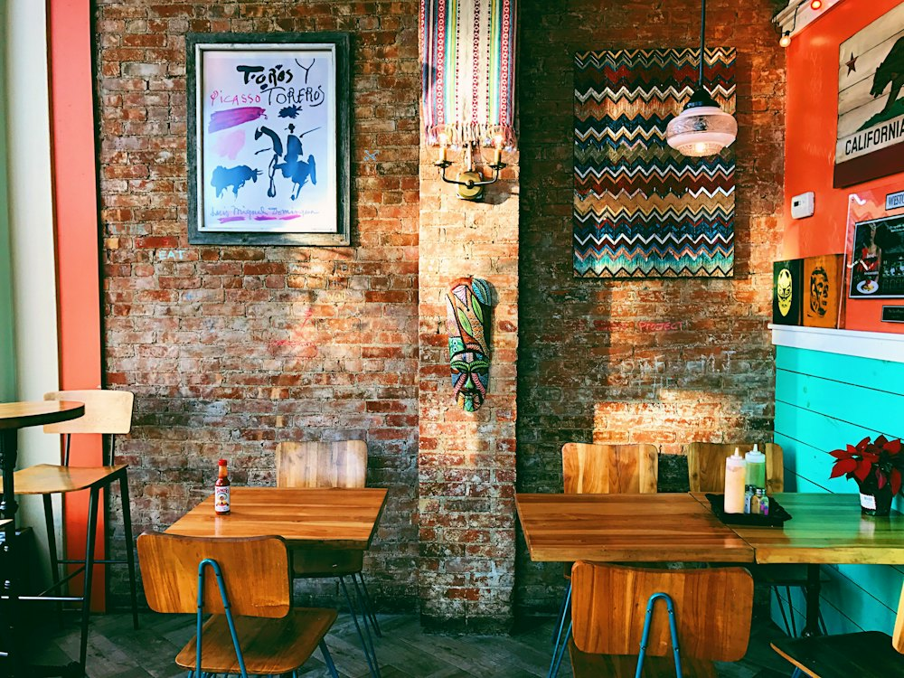

ご挨拶
GREETING
昭和五十三年、この町の角に
小さな喫茶店を開きました。
ネルで一杯ずつ落とす珈琲と
先代から変わらないプリンの味を
いまも毎日お出ししております。
どうぞごゆっくり、おくつろぎください。
二代目店主

名物
SPECIALTIES

固めのプリン ¥500
卵と牛乳、砂糖だけ。先代のレシピのまま、少し苦めのカラメルで。
カフェオレ ¥600
ネルで濃いめに落とした珈琲に、温めた牛乳をたっぷりと。

水出しアイス珈琲 ¥600
ひと晩かけて落とした、まろやかな一杯。生クリームを添えて。
お知らせ
NEWS
- 十月は第三日曜日も休ませていただきます
- 秋の限定「栗のプリン」はじめました（なくなり次第終了）
- お盆も休まず営業いたします
営業のご案内
| 所在地 | 〒000-0000 〇〇市〇〇町4-5-6 |
|---|---|
| 最寄駅 | 〇〇駅 北口より徒歩3分 |
| 営業時間 | 7:30〜19:00（ラストオーダー18:30） |
| 定休日 | 日曜日・祝日 |
| お席 | カウンター5席・テーブル16席 |
| 電話 | 000-000-0000 |
※ 店内は全席禁煙です。
※ ご予約は承っておりません。お電話でのお問い合わせはお気軽にどうぞ。
※ お支払いは現金・交通系ICがご利用いただけます。
